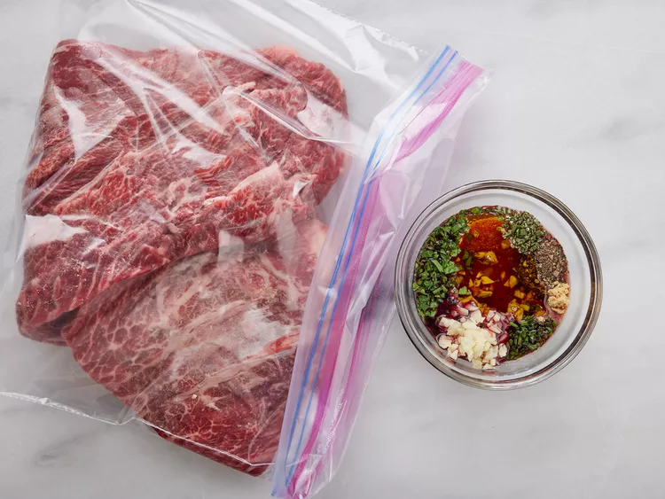
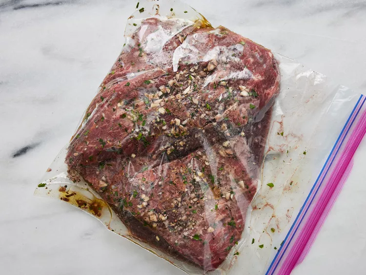
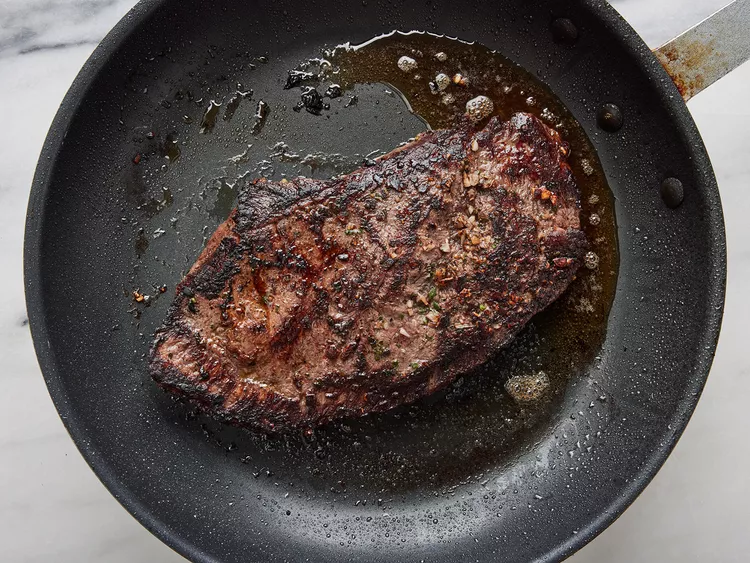
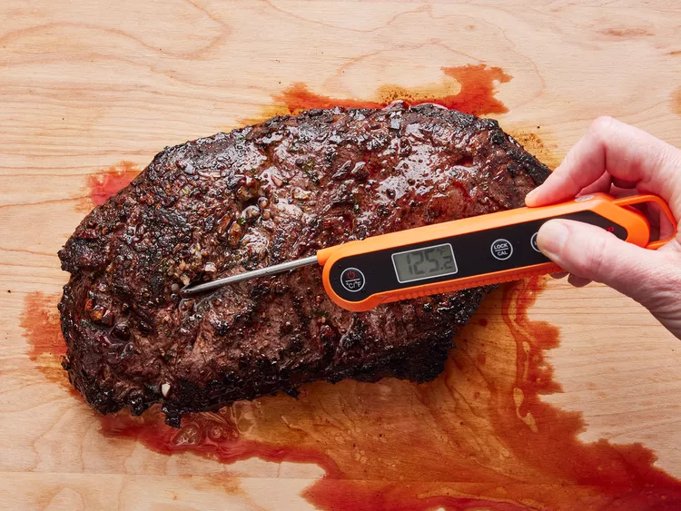

Steak Recipe

Description
This simple flat iron steak marinade (made with olive oil, garlic, parsley, rosemary, chives, red wine, salt, pepper and mustard powder) ensures flavorful and juicy meat every time.
Make sure you marinate the steaks in the fridge for at least a few hours to reap the full benefits of the marinade.
Ingredients
- 1 (2 pound) flat iron steak (or other preferred cut)
- 2 ½ tablespoons olive oil
- 2 cloves garlic, minced
- 1 teaspoon chopped fresh parsley
- ¼ teaspoon chopped fresh rosemary
- ½ teaspoon chopped fresh chives
- ¼ cup Cabernet Sauvignon (or other dry red wine)
- ½ teaspoon salt
- ¾ teaspoon ground black pepper
- ¼ teaspoon dry mustard powder
Steps
- Place steak inside a large resealable bag. Stir olive oil, garlic, parsley, rosemary, chives, red wine, salt, pepper, and mustard powder together in a small bowl.

- Pour marinade over steak in the bag. Press out as much air as you can and seal the bag. Marinate in the refrigerator for 2 to 3 hours.

- Heat a nonstick skillet over medium-high heat. Sear and cook the steak in the hot skillet for 3 to 4 minutes on each side for medium rare, or to your desired degree of doneness.
An instant-read thermometer inserted into the center should read 130 degrees F (54 degrees C) for medium rare.

- Discard the marinade. Allow the steaks to rest for about 5 minutes before serving.

- Steak is now ready to eat! Enjoy!